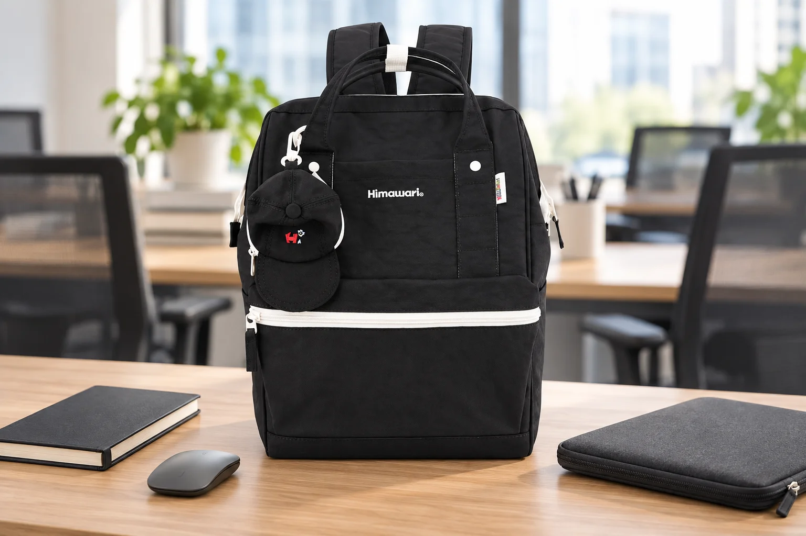

공유 오피스에서 도구가 돌아갈 자리를 남기는 법

오전에는 공유 책상에서 일하고 오후에는 회의실로 옮기는 날이면 업무 도구가 여러 자리를 거칩니다. 노트북을 챙겼어도 콘센트의 충전선이나 옆면의 작은 연결 장치가 남을 수 있습니다. 가방은 출퇴근 때만 짐을 담는 곳에서 업무 중 도구가 돌아오는 자리로 역할이 늘어납니다. 무엇을 가져갈지와 지금 무엇이 밖에 나와 있는지를 함께 알아보는 준비가 필요합니다.
책상에 앉으면 첫 작업에 필요한 것부터 꺼내봅니다. 가상의 문서 작업이라면 기기와 마우스, 메모할 도구를 펼칠 수 있습니다. 사용하지 않는 소품은 가방에 남겨두면 꺼낸 물건의 범위가 줄어듭니다. 책상을 충분히 채워야 일할 준비가 끝난다고 생각할 필요는 없습니다. 지금 할 작업에 맞는 묶음을 정하면 됩니다.
함께 쓰는 도구끼리 돌아가기
작은 어댑터는 연결한 기기와 별도로 기억해야 합니다. 연결이 끝났을 때 같은 보관 묶음으로 돌아가게 정해봅니다. 기기마다 분리와 이동 방법이 다르므로 사용 안내에 맞춰 마친 뒤 정리합니다. 연결된 선을 잡아당겨 가방에 넣는 대신 어떤 도구를 어디에서 쓰고 있었는지 확인하는 순서를 둡니다.
빈 파우치를 회수할 자리로 활용할 수도 있습니다. 도구를 꺼낸 뒤 파우치를 서랍에 따로 숨겨두면 퇴실 때 또 한곳을 확인해야 합니다. 가방 안이나 책상 위의 정해둔 영역에 두면 어떤 묶음이 아직 비었는지 볼 수 있습니다. 사용한 물건을 모두 한 파우치로 합치는 규칙이 아니라 함께 쓰는 조합을 다시 모으는 방법입니다.
개인 물건과 공용 도구는 처음에 구분합니다. 비슷한 충전선이나 마우스가 책상에 있으면 누구의 것인지 확인한 뒤 사용합니다. 나갈 때 보이는 물건을 전부 자신의 가방에 담으면 공용 비품까지 가져갈 수 있습니다. 공동으로 쓰는 물건의 반환 위치가 정해져 있다면 그 위치를 따르고 개인 물건은 자신의 묶음으로 돌아가게 합니다.
이 글에 소개한 Himawari No.9007 제품 정보는 작업 도구를 들고 이동할 가방을 살펴볼 자료입니다. 공유 책상에서는 많은 물건을 담는 것과 여러 번 꺼내는 것이 서로 다른 선택 기준이 됩니다. 사용하는 기기의 보관 조합을 정한 뒤 실제로 넣고 꺼내보세요. 작은 소품을 찾으려고 큰 기기를 매번 빼야 한다면 도구 묶음부터 다시 나눌 수 있습니다.

회의실로 가기 전 끝내는 작업
짧은 이동이라도 연결된 기기를 어떻게 마칠지 확인합니다. 사용하는 기기에서 정한 이동과 보관 방법을 따르고 연결선을 정리합니다. 노트북 위에 마우스와 노트를 쌓아 들면 문을 열 때 손에 남는 물건이 많아질 수 있습니다. 가방에 넣을 것과 손에 안정적으로 들 것을 구분해 이동하는 동작을 한 번 떠올려봅니다.
회의실에서 필요한 것이 적다면 처음의 전체 작업 묶음을 모두 펼치지 않을 수도 있습니다. 발표 자료를 볼 기기와 메모만 꺼낼 계획이면 나머지는 정리된 상태로 둡니다. 다만 접속이나 연결에 필요한 도구가 따로 있는지 실제 일정에서 확인합니다. 회의 종류를 안다고 모든 장소의 장비가 같을 것이라 전제하지 않습니다.
자리를 비우기 전에 현재 사용한 서랍과 책상 아래를 봅니다. 책상 위는 정리되었지만 아래 콘센트에 물건이 남아 있을 수 있습니다. 앉았던 자세에서 보지 못한 곳은 일어나 주변을 확인할 수 있습니다. 자신이 자주 놓치는 위치를 기억하고 같은 순서로 돌아보면 긴 목록을 매번 새로 작성할 필요가 줄어듭니다.
문서나 메모도 회수 항목에 들어갑니다. 업무 자료의 취급 기준과 공간의 안내를 따르고 책상에 남겨두어도 되는 자료인지 확인합니다. 개인 노트를 가져왔다면 어디에 놓았는지 도구와 함께 봅니다. 출력물이 여러 장이면 가방에 담는 묶음이 실제로 오늘 사용할 버전인지 확인한 뒤 옮겨갑니다.
하루를 마칠 때의 회수 기준
퇴실할 때는 오늘 꺼낸 묶음을 다시 모읍니다. 빈 파우치 안을 보고 어떤 도구가 아직 돌아오지 않았는지 확인할 수 있습니다. 다만 파우치가 채워졌다는 사실만으로 책상 전체를 확인한 것은 아닙니다. 도구의 수와 실제 사용한 위치를 같이 보면 다른 곳에 놓은 개인 물건도 떠올릴 수 있습니다.
기기를 가방에 넣은 뒤에는 열어둔 칸과 밖으로 나온 선이 없는지 살펴봅니다. 가방을 메기 전에 가방과 책상 사이에 아직 연결된 물건이 없는지도 봅니다. 이동 중 손에 따로 들 문서가 있다면 어느 목적지까지 가져갈지 정합니다. 가방 하나를 닫았다는 이유로 모든 업무 물건이 안에 있다는 생각을 피하는 확인입니다.
집에 돌아온 뒤에는 다음날 쓰지 않을 도구를 덜어낼 수 있습니다. 공유 책상에서 쓰던 조합과 재택 업무의 조합이 다르다면 모두 동일하게 유지할 필요는 없습니다. 반복해서 가져가지만 사용하지 않는 소품은 다음 일정에 필요한지 봅니다. 반대로 자주 다른 자리에서 찾았던 도구는 함께 쓰는 묶음에 넣을 이유가 생깁니다.
다음 출근 때는 첫 작업을 떠올리고 필요한 묶음을 확인합니다. 오전 책상에서 펼쳤던 것과 오후 회의실에서 꺼냈던 것을 구분해 기록하면 준비가 구체적입니다. 가방 안에는 돌아갈 자리가 있고 책상에는 현재 쓴 물건만 놓이는 구성을 시도해보세요. 자리를 떠날 때 비어 있던 묶음이 다시 채워지고 콘센트와 서랍을 확인하면 이동 준비가 끝납니다.